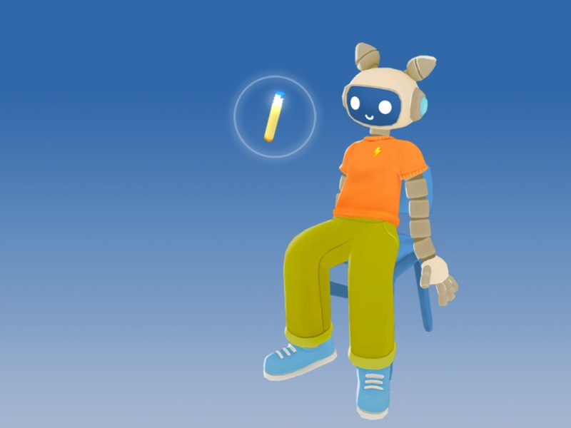
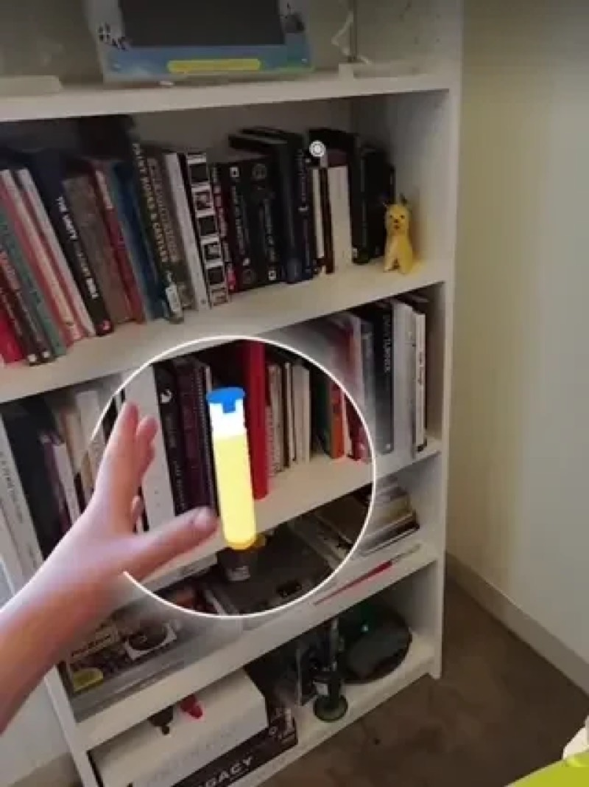
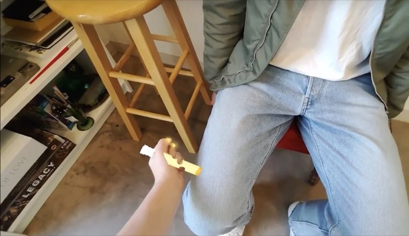
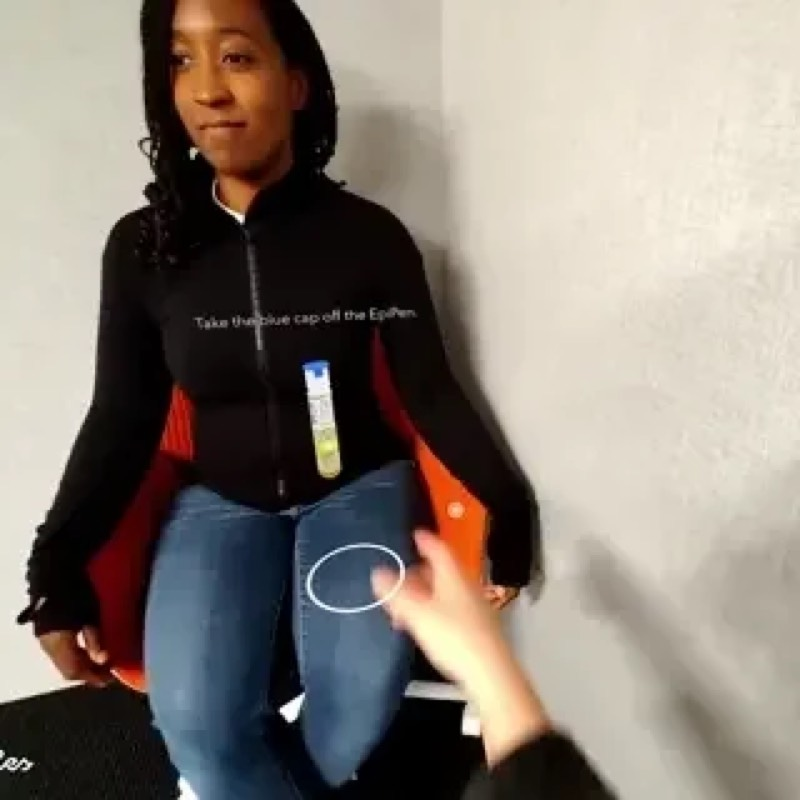

A Snap Spectacles experience that teaches you how to use an EpiPen
Ready Care is an augmented reality EpiPen training experience for Snap Spectacles, made to help people learn and practice an emergency skill.
It started at the 2024 Snap Lensathon, where Kathryn Hicks, Emma Sofija, Paige Piskin, and I built a working prototype in three days. It gave hands-on guidance for an AED, Narcan, and an EpiPen on Spectacles. I was the lead engineer, and we won first place. Ready Care then got funding to turn the EpiPen idea into a more clinically informed training experience.
The need is real. Reviews of the research keep finding mistakes when healthcare workers use EpiPens, from wrong doses to bad technique. In one study of 118 reactions where an EpiPen was needed, caregivers used it 38.1% of the time. In another, only 16% of allergy patients who carry an EpiPen could use it correctly.



